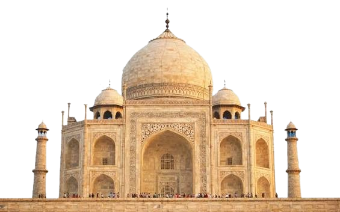
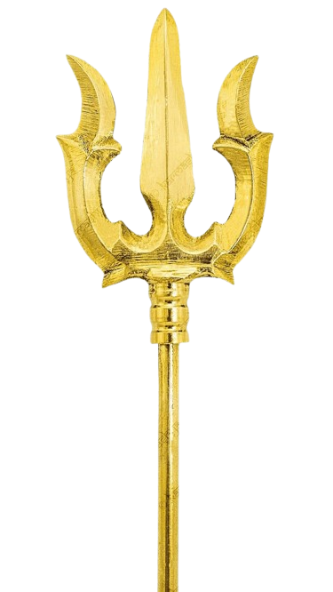
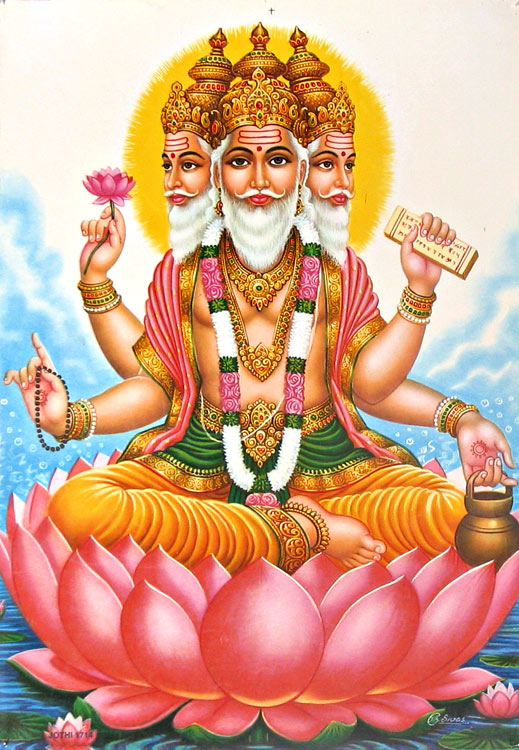

Hindu mythology is one of the oldest and most complex religious and philosophical systems in the world; it is based on the sacred texts of the Vedas and on epics such as the Mahabharata and the Ramayana. India is the original birthplace of this mythology, but it was also practiced and developed in countries such as Nepal, Indonesia, Sri Lanka, and Bangladesh, as well as in other nations where Hinduism is widely practiced (mostly within Asia).
Concepts
In Indian culture, the line separating religion from mythology is virtually non-existent. For this reason, its concepts may seem very familiar—for example:
The four goals of life (Purusharthas): Dharma (morality), Artha (prosperity and success), Kama (pleasure and love), and Moksha (spiritual liberation from the cycle of rebirth).
Dharma and Karma: Dharma is cosmic duty, order, and righteousness, while Karma is cause and effect, where every action has a consequence in present or future lives through reincarnation.
Symbols

Om (ॐ): it represents the root mantra and the three states of consciousness—waking,
deep sleep, and dreaming—as well as transcendental silence.
Lotus flower: it symbolizes purity, enlightenment, and self-realization, as it grows
immaculate in the mud.
Trishula: Shiva's trident, representing his three divine functions: creation,
preservation, and destruction.
Swastika: an ancient symbol of peace, good luck, and prosperity, predating its
appropriation in the West by a long time.
Sri Yantra: a sacred diagram with nine interlocking triangles, used for meditation and
to represent the union of the divine masculine and feminine.
Devas and Devis

The foundation of the Hindu pantheon is the Trimurti—the trinity that governs the cycle of the
universe—accompanied by other highly popular deities. Although it is a polytheistic religion, it is also
pantheistic and henotheistic; this means that while numerous deities exist, there is an ultimate,
profound truth: the god Brahma.
Brahma (the creator): responsible for creating the universe and all living things.
Despite his importance, he is the member least directly worshipped and has few temples dedicated to him
in India. His consort is Saraswati, the goddess of knowledge.
Vishnu (the preserver): the god who sustains the planet and maintains cosmic order
(Dharma). He is known for incarnating on Earth in the form of avatars (such as Rama and Krishna) to
protect humanity. His consort is Lakshmi, the goddess of wealth and prosperity.
Shiva (the destroyer): also known as the transformer, he destroys the universe so that
it can be recreated and renewed. He represents balance and meditation and is frequently associated with
the cosmic dance (Nataraja). His consort is Parvati.
How this reaches us
This influence reached us through a long process of exchange, spanning from the age of maritime expansion and the British colonial period to globalization, the comic book market, and the Western quest for mysticism in spirituality.
Examples of famous works that use this mythology as a reference are Dragon Ball, Avatar, Naruto, One Piece, etc.